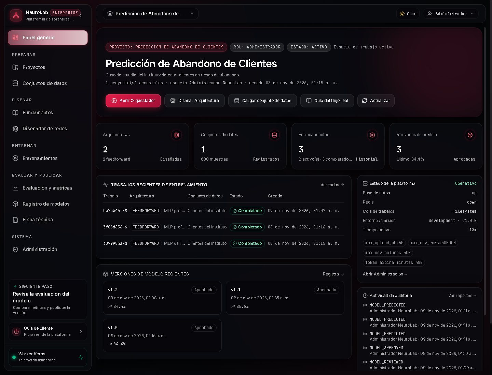
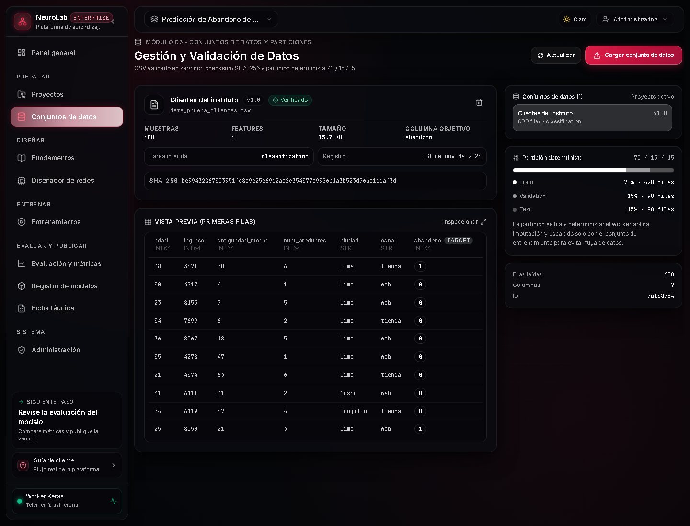
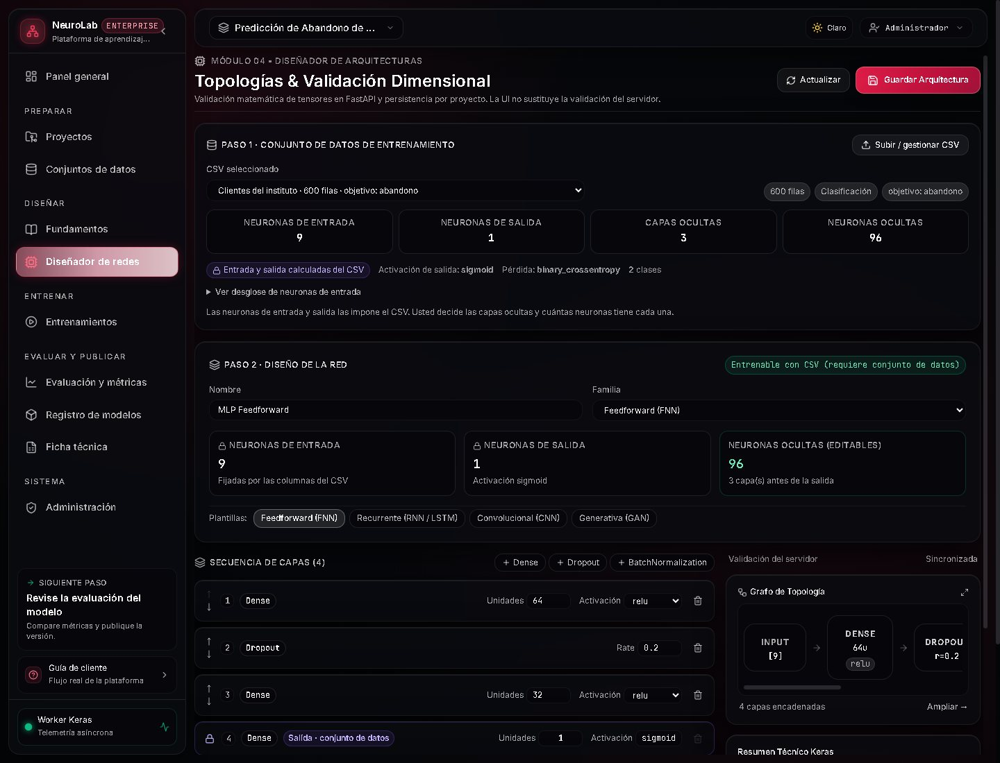
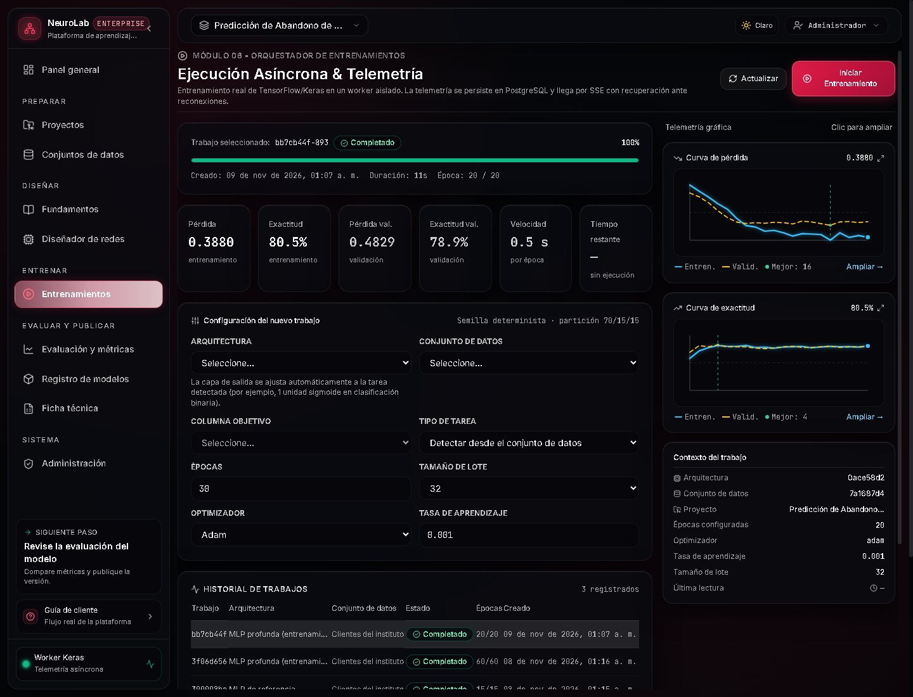
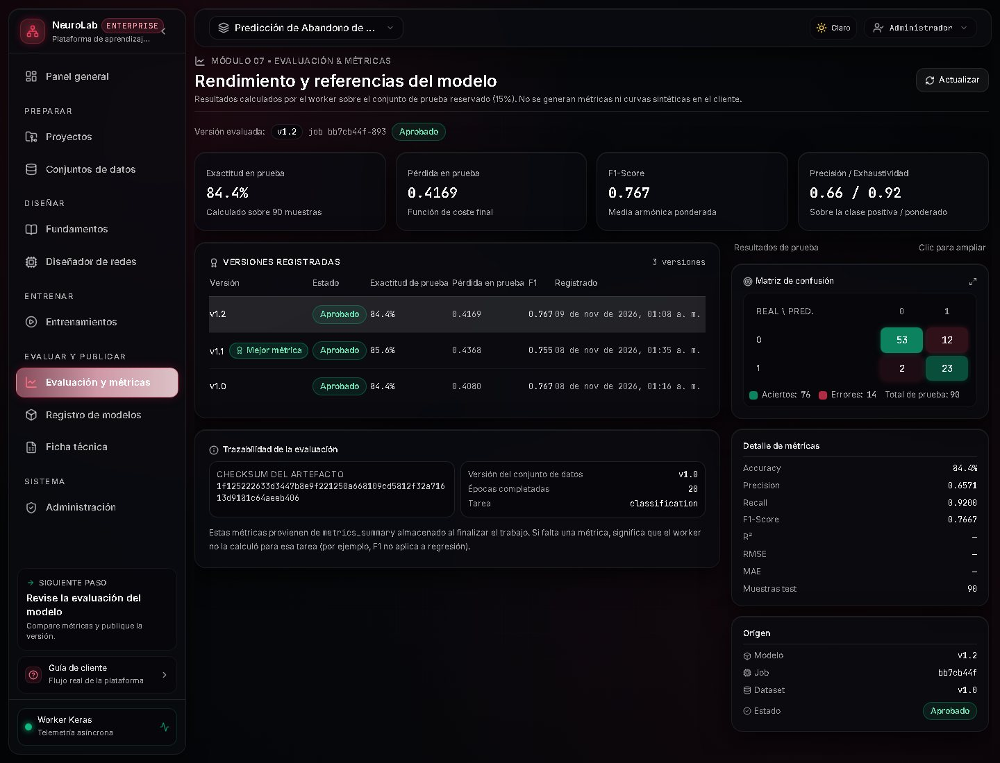
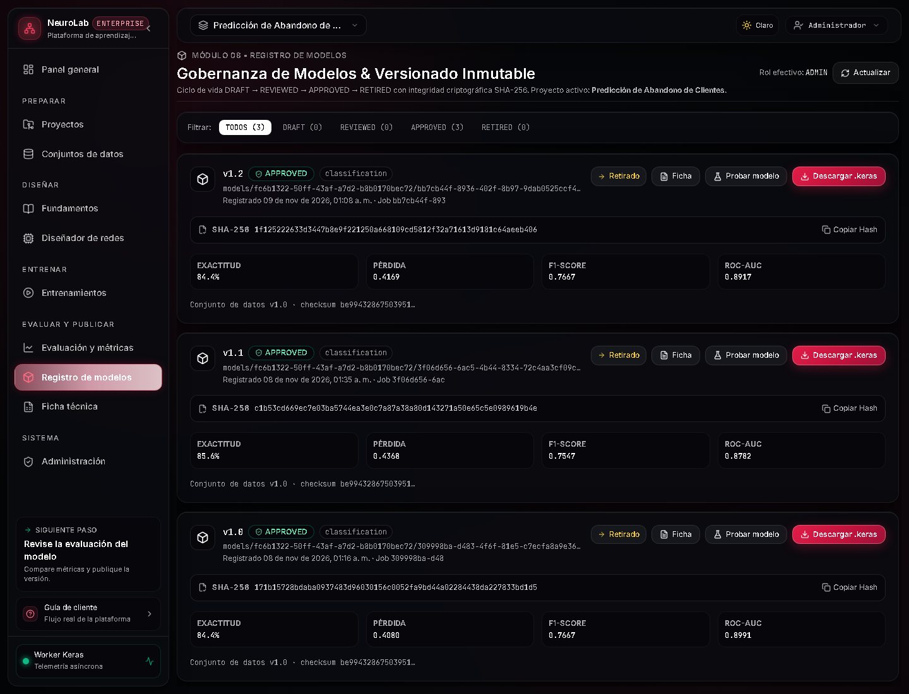
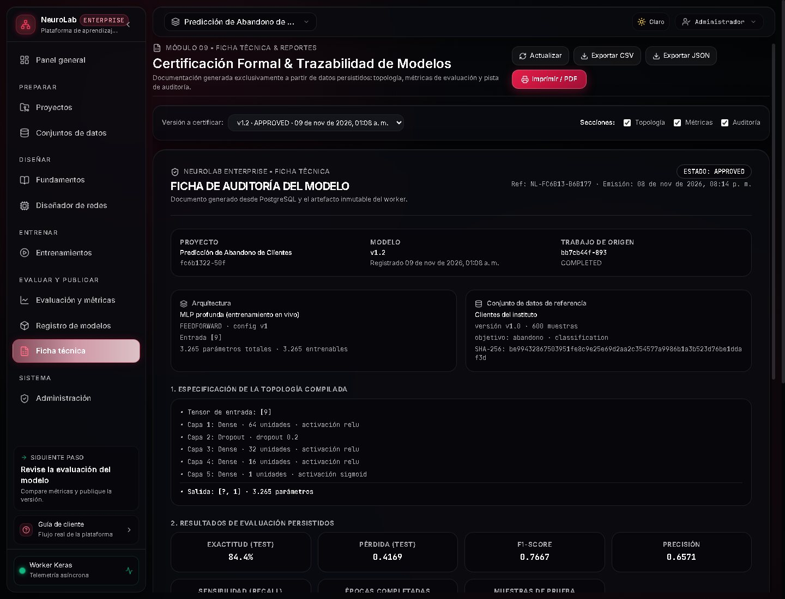
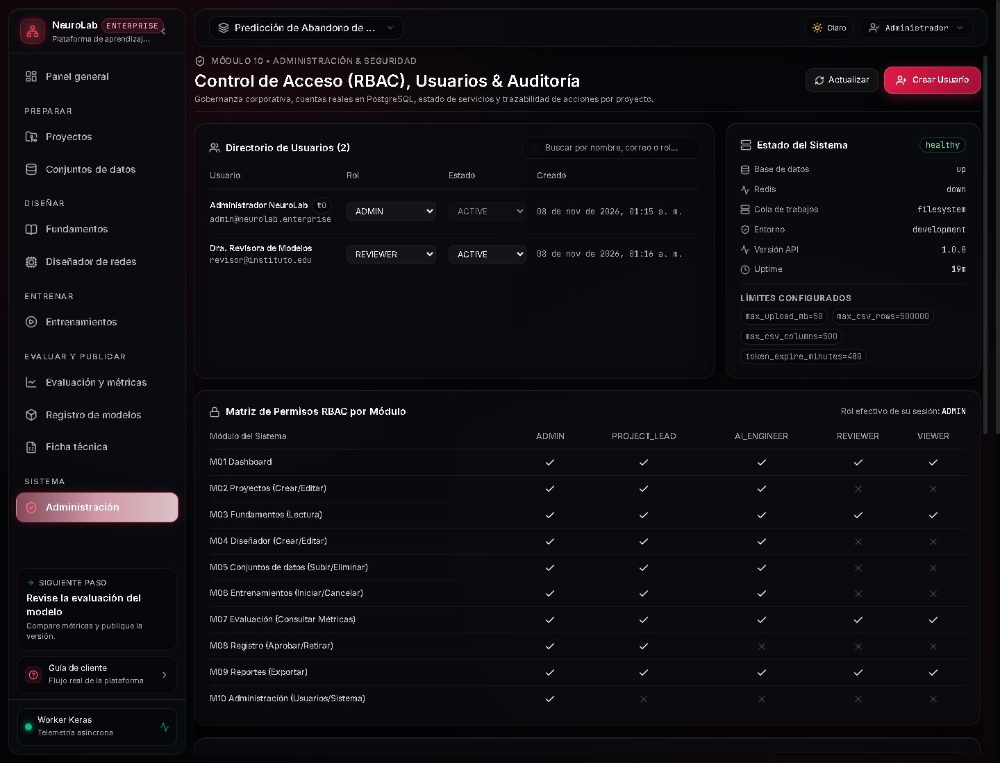

Lo que ocurrió durante esta validación
bb7cb44f desde la interfaz: 20 épocas, Adam, batch 32.1f125222….Panel general
/panelResumen del proyecto y navegación agrupada por flujo. Ahora aparecen 3 entrenamientos completados y 3 versiones de modelo.

Conjunto de datos
/datasetsDataset verificado una sola vez: 600 filas, 9 características y checksum reproducible.

Arquitectura
/architecturesMLP 64-32-16 con dropout y salida sigmoide; 3 265 parámetros. La arquitectura se versiona antes de entrenar.

Entrenamiento en vivo
/trainingEl trabajo nuevo bb7cb44f terminó en 20/20 épocas. Métricas finales: pérdida 0,3880 · exactitud 80,5 % · pérdida val. 0,4829 · exactitud val. 78,9 %.

Evaluación
/evaluationEvaluación automática de v1.2 sobre 90 muestras reservadas. Matriz de confusión: 53 y 23 aciertos, 12 y 2 errores; total 76 aciertos y 14 errores.
| Métrica | Valor | Lectura |
|---|---|---|
| Accuracy | 84,4 % | 90 muestras de prueba |
| Precisión | 0,6571 | Clase positiva |
| Recall | 0,9200 | Detecta 92 % de abandonos |
| F1 | 0,7667 | Media armónica |
| ROC-AUC | 0,8917 | Separación de clases |

Registro y aprobación
/model-registryLa versión nació en DRAFT, pasó a REVIEWED y luego a APPROVED. Cada transición generó un evento de auditoría y un toast de confirmación.

MODEL_REVIEWED a las 01:09 y MODEL_APPROVED a las 01:10,
actor «Administrador NeuroLab». El checksum del artefacto quedó fijado en 1f125222….
Ficha técnica
/reportsLa ficha de auditoría de v1.2 consolida topología, métricas persistidas, hiperparámetros y la pista de auditoría. Incluye el job de origen y el SHA-256 del artefacto.

Administración
/administrationUsuarios, roles y estado de la plataforma. Esta sección solo aparece para el rol ADMIN, lo que demuestra el control de acceso en la navegación.

Cómo presentarlo en 5 minutos
- Arranque:
powershell -ExecutionPolicy Bypass -File scripts/start_demo.ps1 -Fresh(deja la base demo lista con un entrenamiento real). - Durante la exposición: muestra el panel, el dataset y la arquitectura; luego entra a Entrenamientos y lanza un job nuevo.
- Worker: en esta demo se ejecuta con
python workers\training\worker.py --once --job-id <uuid>. En producción corre como servicio continuo; si tu profesor pregunta, dilo así. - Cierre: evaluación → registro (DRAFT → REVIEWED → APPROVED) → ficha técnica → una predicción real.
- Mensaje final: el sistema no oculta resultados adversos: compara con baselines y declara limitaciones en la ficha.